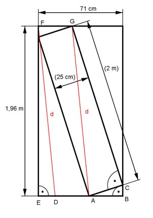

Pythagoras Aufgabe 79 Passt das 25 cm tiefe Regal durch die Tür? Begründen Sie Ihre Aussage durch Rechnung.  Länge der Diagonalen d im Regal: Satz von Pythagoras im Dreieck ACG: d² = AC² + CG² d² = 25² cm² + 200² cm² = 40 625 cm² (1) Nach der Parallelverschiebung von d in die linke obere Ecke der Tür DA = AB ED = 71 - 2 * AB Satz von Pythagoras im Dreieck EDF: d² = EF² + ED² d² = 196² + (71 – 2 * AB)² d² = 38 416 + 5 041 – 284 * AB + 4 AB² d² = 43 457 – 284 * AB + 4 * AB² (2) (1) und (2) gleichgesetzt: 40 625 = 43 457 – 284 * AB + 4 *AB² |-40625 4 * AB² - 284 *AB + 2 832 = 0 |:4 AB² - 71 * AB + 708 = 0 AB1,2 = 35,5 = 35,5 23,5 AB1 = 12 cm AB2 = 59 cm keine Lösung > 25 cm Dreiecksungleichung: Regaltiefe AC = 25 cm sollte < AB + BC < 2 * AB = 24 cm sein. Widerspruch. Regal passt nicht durch die Tür.